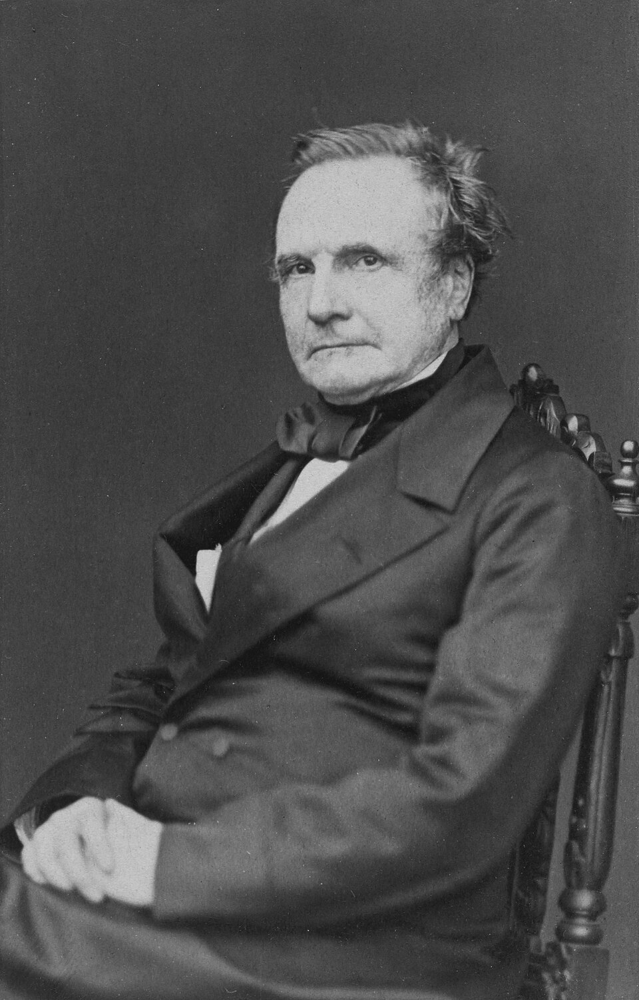
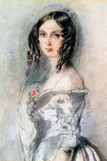

Pionierii Informaticii

Charles Babbage
Considerat "părintele calculatoarelor", a inventat conceptul de mașină de calcul programabilă (Motorul Analitic) în secolul XIX, cu mult înainte de apariția electronicii.

Ada Lovelace
A înțeles potențialul mașinii lui Babbage și a scris primul algoritm din lume, fiind recunoscută la nivel global drept primul programator din istorie.

Alan Turing
A formalizat conceptul de algoritm prin "Mașina Turing" și a avut un rol crucial în spargerea codurilor secrete în WW2. Este părintele informaticii moderne.

Steve Jobs & Bill Gates
Au revoluționat industria în anii '70-'80. Au transformat calculatoarele din mașinării industriale masive în dispozitive personale, accesibile publicului larg.